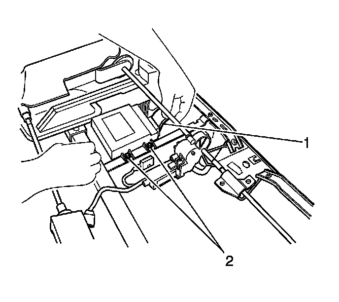

Power Seat Control Module: Service and Repair
Rear Seat Control Module Replacement - Rear Seat Number 2
Removal Procedure
1. Remove the seat cushion frame. Refer to Rear Seat Number 2 Cushion Frame Replacement (Rear Seat Number 2 Cushion Frame Replacement) .

2. Disconnect the electrical connector (1) from the seat control module.
3. Remove the nuts from the control module (2).
4. Remove the module.
Installation Procedure
1. Install the seat control module on to seat adjuster.
Notice: Refer to Fastener Notice (Fastener Notice) .
2. Install the seat control module nuts (2).
Tighten the nuts to 9 N.m (80 lb in).
3. Connect the electrical connector (2) to the control module.
4. Install the seat cushion frame. Refer to Rear Seat Number 2 Cushion Frame Replacement (Rear Seat Number 2 Cushion Frame Replacement) .
5. Calibrate the seat. Refer to Power Folding Seat Calibration (Programming and Relearning) .